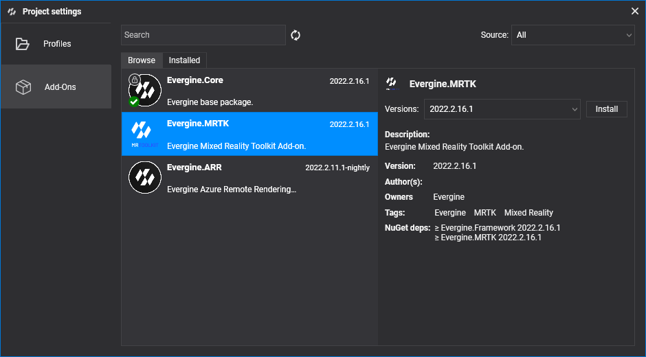

Getting started with MRTK

This page adds MRTK to an Evergine project and prepares a scene to use its pointers and controls. It takes three steps: install the add-on, make your scene inherit from XRScene, and tell the scene which assets to use for cursors, hands, and controllers.
1. Create or open a project
Create a new project with Evergine Launcher, or open an existing one. To run on a headset, add the profile for your device, such as Meta Quest or Pico.
2. Install the MRTK add-on
In Evergine Studio, open the Add-ons Manager and install Evergine.MRTK. Its assets appear under Dependencies > Evergine.MRTK in the Project Explorer.
3. Inherit your scene from XRScene
Every scene that uses MRTK must inherit from Evergine.MRTK.Scenes.XRScene instead of Scene. XRScene creates the MRTK root entity, the near and far cursors for each hand and controller, the gaze provider, and the scene managers that dispatch focus and voice events (FocusProvider and VoiceCommandsProvider). It also registers a physics manager, because the pointers find controls through collisions.
XRScene is abstract: you provide the assets it uses by overriding these properties.
using System;
using Evergine.MRTK.Scenes;
namespace MyProject.Scenes
{
public class MyScene : XRScene
{
// Materials for the cursor when the user pinches and when the hand is open.
protected override Guid CursorMatPressed => EvergineContent.MRTK.Materials.Cursor.CursorPinch;
protected override Guid CursorMatReleased => EvergineContent.MRTK.Materials.Cursor.CursorBase;
// Material for the tracked hand mesh. Guid.Empty hides the hands.
protected override Guid HoloHandsMat => EvergineContent.MRTK.Materials.HoloHands;
// Guid.Empty leaves the spatial mapping mesh without a material, so it is not drawn.
protected override Guid SpatialMappingMat => Guid.Empty;
// Texture and sampler for the far pointer ray.
protected override Guid HandRayTexture => EvergineContent.MRTK.Textures.line_dots_png;
protected override Guid HandRaySampler => EvergineContent.MRTK.Samplers.LinearWrapSampler;
// Models shown for physical controllers. Guid.Empty shows no model.
protected override Guid LeftControllerModelPrefab => EvergineContent.MRTK.Prefabs.DefaultLeftController_weprefab;
protected override Guid RightControllerModelPrefab => EvergineContent.MRTK.Prefabs.DefaultRightController_weprefab;
// Maximum length, in meters, of the far cursor ray.
protected override float MaxFarCursorLength => 0.5f;
}
}
Note
XRScene seals the CreateScene method so it can build the MRTK hierarchy first. If you need to add entities or change the scene when it is created, override OnPostCreateXRScene instead.
protected override void OnPostCreateXRScene()
{
base.OnPostCreateXRScene();
// The MRTK cursors already exist here, so you can look up entities or add your own.
}
Your project is now ready to use MRTK. Run it on a headset, or on Windows with the desktop emulation, and continue with Pointers and control.